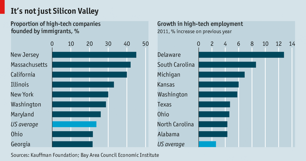

Immigration and Technology
What does technology have to do with immigration? Well, as the need for qualified engineers grows in the US there are no where near enough US citizens to fill all the positions. I am a US citizen currently living in France. I am writting about this because many of my friends would love to go work in the US but they are unable to get a visa. this makes absolutely no sence to me.
The US congress is not very productive right now and I know that there are many important issues to deal with. Many people agree that allowing more qualified engineers into the US will help the economy grow however there is little hope that congress will take action on this anytime soon. The current process for applying for a visa is also very dificult. They only take a certain number of applicants every year for H-1B visas and most people have to wait for months to actually get one.
This issue is important to me for several reasons. First i think that it will be best for my contry and also my friends living abroad. Also, I am an entrepreneur and plan on starting a tech company in the US. that is one of the reasons that I am going to DBC. There is a lack of good technical talent in the US and that makes it much more difficult to start a company. There are many talented programmers but their salaries are very high. This makes it almost impossible to get good talent to work at a start-up.
Some people say it doesn't really matter because you can outsource coding to other countries. Why not just let everyone work remotely? Well this definately helps but it doesn't address the fact that not only do we need employees, we need founders. The US is a great place to start a business. Many of the places that have tech talent outsourcing don't have the same opportunities as the US. The chart below shows just how many tech companies are founded by immigrants
